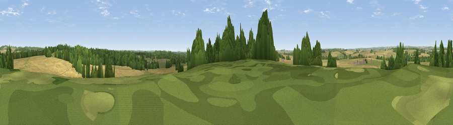

Viewpoint near Woodlands
#32118 in England · top 50% of its area beats it · near WoodlandsThe view, rendered

A 360° render of this exact spot computed from the terrain model, tree cover and land cover — summer colours, afternoon light, calibrated against photographs of famous viewpoints. Real trees, hedges and buildings will differ in detail.
The panorama
Grey silhouette: terrain skyline in each direction (720 bearings, Earth curvature and refraction included). Dashed green: skyline with trees (+15 m) and buildings (+8 m) as obstacles. Blue strip: how far the ground is visible on each bearing.
Where the view opens
Wedge length = distance to the farthest visible ground on that bearing (vegetation-aware). Rings at 10, 25 and 50 km.
What fills the view
56% cropland · 23% grassland · 19% woodland · 2% built-up
Angular shares of the visible panorama (visual magnitude), not map area. Landscape diversity 0.46 (0–1 Shannon).
Key numbers
More beautiful places nearby
The staircase of upgrades: each row has a higher view potential than everything closer. Driving times are estimates from straight-line distance, calibrated against real road routing — check an actual route before setting out.
| Place | Direction | Drive | Score |
|---|---|---|---|
| Chalbury Hill | SSW · 3 km | ~8 min | 56.5 |
| Viewpoint near Cranborne | N · 7 km | ~14 min | 65.0 |
| Trow Down | NNW · 14 km | ~25 min | 67.5 |
| Monk's Down | NW · 15 km | ~27 min | 74.4 |
| Viewpoint near Berwick St John | NW · 15 km | ~27 min | 78.2 |
| Viewpoint near Harman's Cross | S · 28 km | ~45 min | 80.8 |
| Viewpoint near Studland | S · 28 km | ~45 min | 82.2 |
| Ballard Down | S · 28 km | ~45 min | 83.2 |
50.88700, -1.95410 · source: screening · position refined by local search. Computed location — check access rights before visiting.